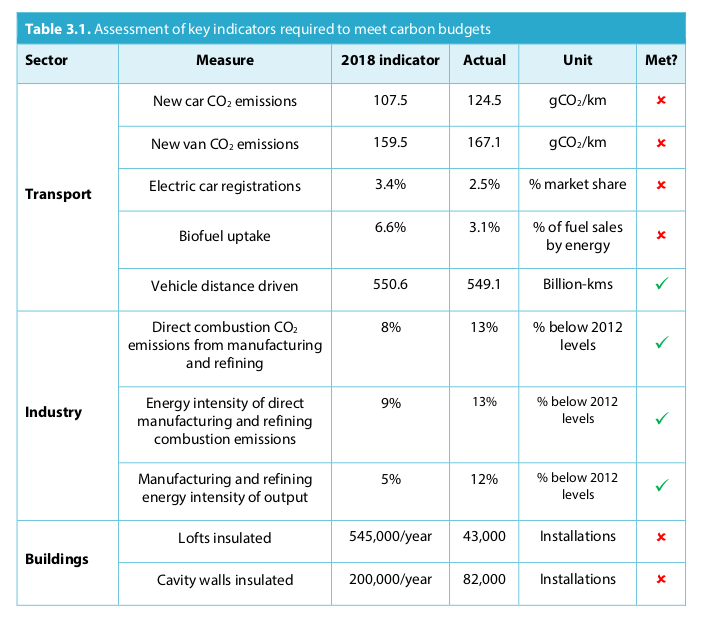
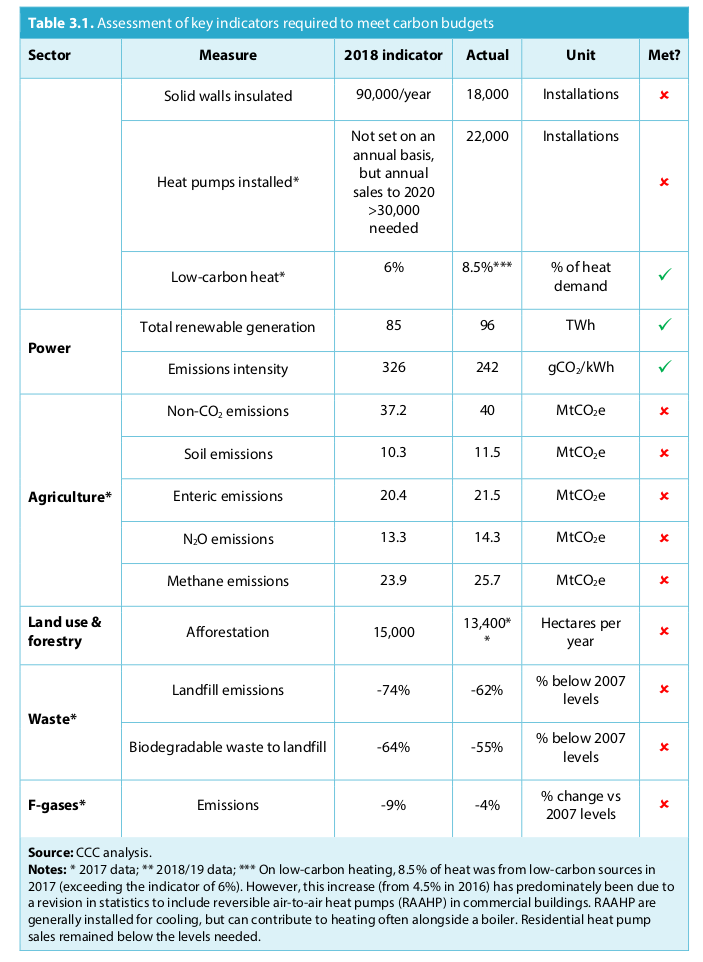

Future emissions reductions depend on policies and actions taken now. In this chapter we review progress against our indicators for measures to reduce emissions and implementation of policies to drive future reductions. We assess this underlying progress against indicators and milestones that we set out in previous progress reports to Parliament to deliver against the legislated carbon budgets and the previous 2050 target for an 80% reduction in greenhouse gas emissions. However, the adoption of a netzero target for greenhouse gas emissions in 2050 means that emissions will need to reduce further and faster than under the previous target. We consider progress towards future carbon budgets and deep decarbonisation by 2050, in three sections:
- 1. Actions to reduce emissions
- 2. Progress in policy development
- 3. The net-zero challenge – what is needed from policy now
We track progress towards meeting carbon budgets and the 2050 target through the use of indicators, which both help to explain progress to date in reducing emissions and provide a guide to likely future reductions. The indicators are based on our assessment of the costeffective path to meeting the targets, based on the Committee’s scenario work. They are not intended to be prescriptive – as long as sufficient overall progress is made, it may be appropriate to outperform some indicators and underperform on others. The indicators will need to be revised in future to align to the new net-zero target for 2050. Progress is generally off-track in most sectors, with only seven out of 24 of the indicators on track in 2018 (Table 3.1). Outside the power and industry sectors, only two indicators were on track:
- Progress in deploying measures to reduce emissions is off-track across transport, buildings,
agriculture and land use. In these areas, progress to date is behind virtually every indicator
we track, often by a wide margin.
- Reductions in the CO₂ emissions of new vehicles have fallen well short of our indicators. Lack of progress over several years has contributed significantly to surface transport now being the highest-emitting sector in the UK (Box 3.1).
- Deployment of energy efficiency measures in buildings are running at less than 20% of the rate under our indicators, having fallen sharply since policy changes in 2012. Deployment of non-bioenergy low-carbon heat (e.g. heat pumps) remains weak.
- Progress is falling short of all of our indicators across agriculture and land use, where policy has been lacking or ineffective in driving the necessary emissions reductions.
- There has been good progress in the power sector, driven by strong policy. Policy has incentivised renewable power generation and driven down costs in doing so, pushed coal to the margins of the electricity system through carbon pricing, and reduced demand through efficiency improvements mostly driven by regulation and product standards. Although isolated, this represents a significant success and is clear evidence that emissions can be driven down by a well-designed, comprehensive policy package.
- At a high level, progress in industry has been good, but it is important to look beneath this to understand whether progress is due to action to decarbonise or wider shifts in technology and the economy. Our decomposition analysis, which seeks to attribute changes to different drivers of emissions, suggests that over the period 2012-2017 industrial output grew 14%, and that the 12% fall in direct CO₂ emissions can be attributed to a structural movement towards a less carbon-intensive mix of industrial output (accounting for 20% of the change), improvements in energy intensity (40%) and changes in fuel mix (40%). It is not clear whether these reductions were driven by policy.
Despite the lack of progress in deploying measures to reduce emissions, overall emissions are below the level required to meet the second and third carbon budgets. As we explain in Chapter 4, this is because of lower economic activity than expected when the first three budgets were recommended in 2008, together with changes in the EU emissions trading system that affect emissions accounting under carbon budgets.
We plan to update our indicator set once we have assessed the pathway towards net-zero emissions by 2050 as part of advising on the sixth carbon budget. This is likely to entail both reassessment of the level of indicators to reflect the need for more rapid deployment (e.g. of electric vehicles) and a broadening of the indicator set (e.g. on the demand side).
 
Our previous progress reports have set out the ‘policy gap’ to meeting the fourth and fifth carbon budgets, both of which were set on the cost-effective path to achieving an 80% reduction in emissions by 2050. These budgets will need to be outperformed on the way to achieving net-zero emissions by 2050.
Over the last year, Government estimates of the policy gap to the fourth and fifth carbon budgets have gone up due to increases in their projections of ‘baseline’ emissions (i.e. before policy) outweighing additional savings due to new policies:
- Projections of future overall UK emissions out to 2035 are largely unchanged in the 2018 edition of the Government's Energy and Emissions Projections (EEP), published in April 2019, compared to the previous edition. However, within this total there has been a shift from emissions covered by the EU emissions trading system (i.e. the 'traded' sector) towards nontraded sectors. Because of emissions accounting rules under carbon budgets (see Box 1.2), this has increased the projected shortfall in meeting the fourth and fifth carbon budgets.
- Only three new policies have been quantified and newly included within these projections: Boiler Plus, Streamlined Energy and Carbon Reporting for Business, and Industrial Heat Recovery Support. The savings newly included from these policies amount to less than 5 MtCO₂e across each of the five-year fourth and fifth carbon budget periods. There remain many other areas in which significant ambitions were outlined by the Government in the Clean Growth Strategy in October 2017, but where policy has not yet been finalised.
Overall, the shortfalls to meeting the fourth and fifth carbon budgets have each increased by 40- 50 MtCO₂e across each of the respective five-year periods. This approximately reverses the downward change to the projections made in the preceding edition of EEP, meaning that the policy gaps to the fourth and fifth carbon budgets are likely to be similar to our assessment of 65 MtCO₂e made January 2018 (prior to these two updates to the projections). It remains urgently necessary to close the policy gap to these carbon budgets and to get onto a path to meet the net-zero target.
In our June 2018 progress report we set out a range of actions required over the following year (i.e. by now) to get on track to meeting the fourth and fifth carbon budgets and the 80% target for 2050. In the intervening 12 months there has been disappointing overall progress, with only one milestone out of 25 delivered in full. There are 10 without even partial progress (Table 3.2), including strengthening incentives for uptake of electric vehicles and policy to drive improvements to energy efficiency for 'able-to-pay' households.
Transport is now the highest-emitting sector and must be a key contributor towards the reductions in greenhouse gas emissions needed over the period to 2030. Delays in making policy progress present a significant risk to meeting the fourth and fifth carbon budgets and are also likely to lead to higher costs and worse air quality. Policy progress over the last year has been very limited:
- Necessary progress has not been made on standards for new car and van CO₂ emissions nor on strengthening incentives to purchase cleaner vehicles. The Road to Zero strategy was published last year, but was insufficiently clear about what cars and vans would be permitted to be sold after conventional cars and vans are phased out. The phase-out date of 2040 is too late to ensure that the fleet is fully switched over to zero-emission vehicles by 2050 and fails Chapter 3: Underlying progress in the UK towards deep emissions reduction 55 to grasp the opportunity of electric vehicles that are expected to be cheaper to buy, cheaper to run and less polluting from before 2030.
- A voluntary commitment has been made by the freight sector to reduce emissions by 15% by 2025. However, it remains unclear how this target will be achieved: greater incentives and monitoring will be needed to ensure progress. Whilst there have been positive developments in terms of awarding funding for low-emission buses and for sustainable transport improvements in a select number of cities, bus usage has continued to decline.
- The Government launched a consultation in December 2018 on its long-term vision for aviation. Within this, it accepted the Committee’s long-standing planning assumption that for an economy-wide target of an 80% emissions reduction, aviation emissions in 2050 should be no higher than those in 2005 (i.e. 37.5 MtCO₂e). However, the final Aviation Strategy has not yet been published and the Government has not set out the implications of limiting emissions for aviation demand.
New-car CO2 emissions is an important indicator that car manufacturers are making progress in introducing less carbon-intensive vehicles. Following improvements in the average CO2 emitted per km from new cars from when regulations were introduced in 2009 to 2016, gCO2/km rose over the past two years.
- In 2018 the average test-cycle CO2 intensity of cars sold in the UK has risen from 121.1 to 124.5 gCO2/km, a 2.9% increase.
- There has been a significant shift towards large vehicles, which now represent 31% of new car sales, compared to 21% in 2010. This change in the size of cars alone contributed a 1.8% increase in new car CO2 intensity.
- The market share of hybrid, plug-in hybrid and electric vehicles increased from 4.7% to 6% in 2018. Without this change in market share, average new car CO2 intensity would have been 0.6% higher.
- In 2018, 68% of new cars were tested under the old test-cycle regime (the New European Driving Cycle) and 32% under the new regime (the Worldwide Harmonised Light Vehicle Test Procedure), which makes true comparisons difficult. Emissions intensity excluding the new test results would have been 122.7 gCO2/km, a 1.3% increase from 2017, lower than the 2.9% increase when all values are included.
- New diesel car sales fell from a 42% share to 32%, with a corresponding increase in petrol sales to 62%. The majority of the increase in petrol sales has been in larger vehicles, leading to a rise in the overall average CO2 intensity of petrol vehicles.
- Diesel cars had a higher average carbon intensity than petrol for the first time since 2010. The new test regime has led to car manufacturers reporting intensities around 10% higher for new diesel vehicles compared to vehicles tested under the old test regime. There has been a 5% increase for petrol vehicles. However, as there are no vehicles tested using both tests in the reported measurements it is not possible to say how much of this increase is due to changes in the measurement process, or whether there are also underlying changes in new car CO2 intensities.
Whilst the transition to the more rigorous test-cycle is welcome, it has introduced new sources of uncertainty. Nevertheless, it is clear that UK average new car CO2 intensity is increasing. The EU-wide new car average carbon intensity target is 95 gCO2/km by 2020/21. Whilst provisional data from the EU indicates that new car CO2 is currently lower across the EU (compared to the UK) at 120.4 gCO2/km in 2018, the EU has also experienced an increase for the second year running. These increases mean that achieving this target on a UK-basis now requires a reduction of 8.6% each year for the next three years, which the UK is not currently on track to deliver.
Electric vehicle market share rose in 2018 to 2.5%, an increase of 35% over the previous year. Of these, plug-in hybrid electric vehicles represented 74%, with pure battery electric vehicles representing 26%. The Committee’s indicator to be on track for the fifth carbon budget had a 3.4% market share for electric vehicles in 2018.
The number of electric vehicle models available for sale has remained approximately stable between June 2018 and July 2019, but the electric range of the vehicles on offer has improved, with 9 models now available with over 200 miles of range. In November 2018, the Government cut the Plug-in car grant to a maximum of £3,500 for battery electric vehicles, and removed the grant for plug-in hybrid vehicles. Whilst it is too early to ascertain the impact of this on the electric vehicle market, it remains important to provide support in the near term. A significant number of manufacturer announcements have indicated that a much larger range of electric vehicle models will become available for sale before the end of 2020, the majority of which will have over 200 miles of range.
Electric vehicle charging infrastructure has also improved, with 23,500 chargers available in June 2019, compared to 16,700 in June 2018. Rapid charger numbers have increased from 3,500 in 1,100 locations in June 2018 to 5,100 chargers available in 1,500 locations in June 2019. The UK’s first 350 kW ultrarapid charge point was opened in April in Sunderland. Councils have begun to provide infrastructure for drivers without an off-street parking space in which to install a charger, with 28 councils taking up funding from the Office for Low Emission Vehicles for installing public chargers near homes.
Demand for car travel rose by 0.2% in 2018, a slower rise than in the previous four years. Statistics for walking, cycling and bus usage are reported separately by each devolved administration:
- The number of local bus journeys declined in 2018 in England (1.6%) and Scotland (5.1%), and increased in Wales (0.7%) and Northern Ireland (1%).
- In England, the number of parts of journeys walked and cycled increased from the previous year by 3% and 15% respectively in 2017, the latest year for which data are available.
- In Wales, the number of people cycling at least once a week as a means of transport rose by 20% in 2017/18, whereas the number of people walking at least once a week as transport fell by 5%.
- For Scotland and Northern Ireland, data is not currently available on the number of walking or cycling trips for 2017 or 2018.
There has been a surge in policy activity for industrial decarbonisation in the past year, including the setting of the Government’s industrial decarbonisation clusters mission, which aims to establish the world’s first net-zero carbon industrial cluster by 2040 and at least one low-carbon cluster by 2030. Despite this activity, proposals and ambitions need to be turned into clear and concrete policies and further ambition is required.
- Two significant decarbonisation funds for capital expenditure were announced in the past year: the Industrial Energy Transformation Fund (IEFT) and the Industrial Strategy Challenge Fund (ISCF) (Figure 3.1). The Government plans to consult formally on the design of the IETF in autumn 2019 and the ISCF plans to launch an expression of interest in autumn 2019. Both schemes will have a significant challenge deploying large-scale fuel switching or carbon capture and storage (CCS) in industry unless ongoing support for operational expenditure is provided to complement the schemes, which Government is currently considering.
- The UK CCUS Action Plan was published in November 2018, setting out Government’s plans on industrial CCS, including a commitment to consult on a market-based industrial carbon capture framework in 2019. In June 2019, Government awarded £26m of innovationlevel funding for nine carbon capture, usage and storage projects.
- There have been a number of further policy developments on energy efficiency. The Environmental Reporting Guidelines have been in force since April 2019, including streamlined energy and carbon reporting guidance. Climate Change Levy rates increased in April 2019 by 45% for electricity and 67% for gas. The first round of funding from the Industrial Heat Recovery Support project started in December 2018. The Government initiated an evaluation of the Climate Change Agreements, expected to conclude later in 2019.48 However, the Government has not set out how the improvements of 20% in business energy efficiency committed to in the Clean Growth Strategy will be achieved.